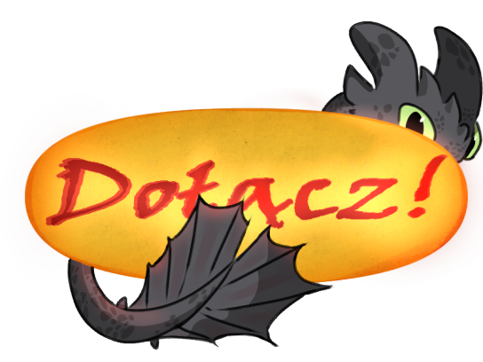

═══════════════ ╰──────༺♡༻──────╯════════════════
"Gdy byłem mały, na świecie żyły smoki..." powiedział kiedyś Czkawka - pierwszy wiking, który odważył się wytresować smoka. Jedni mówili, że to legendy, drudzy, - że bajki. Są jednak ci, którzy widzieli je naprawdę. I może jeszcze zobaczą? Tego dowiesz się na naszym serwerze...
Witaj przybyszu! Zapraszamy cię serdecznie do zwiedzenia naszego pięknego smoczego gniazda, w którym oferujemy zarówno rozszerzenie historii naszych ukochanych bohaterów z serii filmów i seriali "Jak Wytresować Smoka" jak i wiele więcej!
꧁Oferujemy꧂
➳❥ Rozbudowany serwer z wieloma sekcjami! Od lokacji rp do offtop!
➳❥ Ciekawą mechanikę serwera jak kostki, statystyki albo nieprzewidywalnego MG!
➳❥ Możliwość stworzenia lub wybrania kanonicznej postaci wikinga i smoka!
➳❥ Miłą, pomocną i otwartą na propozycje administrację!
➳❥ Kontynuacja fabuły, eventy z nagrodami!
➳❥ Wspólne aktywności jak seans filmowy albo granie w gry!
꧁Wymagamy꧂
➳❥ Jakiejkolwiek aktywności.
➳❥ Odpis minimum 5 zdań.
➳❥ Stosowania się do regulaminu.
➳❥ Bycia miłym dla innych graczy i administracji. Wszelkie kłótnie przenoszone są na prywatę.
➳❥ Stosowania się do terminów na oddanie karty postaci oraz odpisów.
Dołącz do nas już teraz!

18.03.2023
⋆═══════════════════════⋆
Wstęp
⋆════════════════════════⋆
*"Nie byliśmy jeszcze gotowi na smoki..."*
Minęło dość sporo czasu odkąd ostatni latający gad zniknął za horyzontem. Wikingowie rozpoczęli spokojne, pełne ręcznej pracy życie. Nastąpił rozrost kulutrowy, gospodarczy i rozrywkowy. Wyspy zaczęto odkrywać tradycyjnie, podróżując łodziami. Fauna i flora otrzymały błogosławieństwo spokoju i mogła wypuścić nowe okazy zwierząt i roślin. Ludzie skupili się na sobie, zapominając o dawniej wojnie między mitycznymi istotami.
Nowa generacja wikingów i smoków zawitała na świat. Każdy dorastał we własnej krainie, nie mając pojęcia o tym, że nie są sami.
Czas pokoju jednak kiedyś musiał się skończyć. Coraz więcej smoków wymykało się z Ukrytego Świata, chcąc powrócić do środowiska ludzkiego. Ciekawskie młode smoki zakradały się do wiosek. Podkradały ryby, straszyły zwierzęta. Zainteresowane niecodziennymi obiektami, zbliżały się do środowisk ludzkich. Nie znały strachu przed nimi, w odróżnieniu od ich rodziców.
Nie pozostało to oczywiście niezauważone. Ludzie z ciekawością podchodzili do smoków, chcąc nawiązać kontakt albo...zacząć walczyć. Dawni Łowcy Smoków na nowo wyciągnęli swe bronie i już rozplanowali swój powrót. Największą tajemnicą łowców był Grimmel. Zdołał się uratować przed utonięciem dzięki swojemu smoku, który ciągle był pod wpływem własnej toksyny. Uciekł daleko za morze i tam stworzył swoje imperium. Pochłonięty chęcią zemsty poszukiwał Ukrytego Świata, chcąc zabić Szczerbatka i rzucić jego ciało pod nogi Czkawki. Pogłoski twierdzą, że jest coraz bliżej celu...
Na Archipelagu natomiast wychodzą nowi wojownicy: Lordowie Wojny na czele których stoi Seir Spiteson. Obrali sobie jako cel wieczne podboje i powoli rosną w siłę.
Z pasji Grimmela do używania smoków jako broni zaczerpnęli inspirację. Lordowie wojny rozwinęli się, porywając smoki i zniewalając je. Zapuszczają sie coraz dalej i dalej, pod władzą swojego okrutnego lorda - Daru Zemsty.
Niech bogowie mają was w swojej opiece, byście nie zostali postawieni przed jego oblicze...
Podróże pozwoliły na odkrycie wielu ludów, które wcześniej pozostawaly nieznane mieszkańcom Berk.
Jasne Brody? Drzewni Posłańcy?
Nikt nie podejrzewałby nawet takiej różnorodności.
Jak wiele pozostało jeszcze do odkrycia?
Może twoją broszką będzie poznanie ich wszystkich
04.08.2023
⋆══════════════════⋆
Rozdział 1.
⋆═══════════════════⋆
Minęło już 10 lat odkąd smoki powróciły na powierzchnie. Czyż to nie jest piękne? Berserkowie urośli w siłę dzięki łączniom handlowym, Wandale rozwijali swoje smocze wynalazki a Obrońcy Skrzydła świętowali narodziny nowego Eruptodona.
Tymczasem po drugiej stronie Archipelagu...łowcy smoków rozwinęli skrzydła śmierci. Coraz więcej latających gadów zaczęło znikać, niepokojąc zarówno Czkawkę jak i Szczerbatka i Selence. Wódz domyślił się czyja to jest sprawka. Od łupieżców dowiedział się o nim - o wielkim Lordzie Seirze, który zaszył się w swojej fortecy i planuje zło ogromne. Niestety nikt jeszcze nie zna dokładnych zamiarów Lorda. On sam również nie dzieli się swoim pomysłem ze strażą. Uchylę wam jednak rąbka tajemnicy...
- No gadaj! Nie mamy całego dnia! - ryknęła Szpadka w kierunku związanego sznurem mężczyzny. Przywiązała razem z bratem biedaka do drzewa, strasząc go swoim wielgachnym smokiem.
- Hatfu! Nic wam nie-?! ZABIERZ GO ODE MNIE! - żołnierz z czerwonym okiem namalowanym na zbroi zawył ze strachu gdy dwugłowy smok spryskał go zielonkawym dymem. Zanim Mieczyk zdzielił go kurczakiem to wybuchł szpieg zapłakany:
- Jakieś dzikusy! Szuka dzikich ludzi z kośćmi! Już nic więcej nie wiem! Błagam zostawcie mn-... - Nie dane mu było dokończyć, gdyż dostał po głowie tak mocno, że zemdlał. Cóż, bliźniaki zdobyli tyle informacji ile mogli i zabrali to do wodza - Czkawki.
17.11.2023
⋆═══════════════════⋆
Rozdział 2
⋆════════════════════⋆
Na Berk coraz więcej oburzonych wikingów szło ze skargą do kochanego przez wszystkich wodza. Dlaczego? Odpowiedź była prosta: ryby zaczynały znikać z popularnych dla Wandali łowisk. Wygłodniałe, dzikie morskie bestie poczęły więc szturmować statki i porty w poszukiwaniu pożywienia. Smoki, które wyleciały poza Berk zaczęły znikać. Ponadto, drogi handlowe z wyspą Łupieżców zostały nagle zamknięte. Gdy wysłano tam kupców, słuch po nich zaginął. Heathera również nie odpowiada na smoczą pocztę.
Zwołał więc Czkawka wielkie zebranie rady. Wieczór ten nie należał do przyjemnych. Z początku nawet brunet nie mógł się przebić przez wrzaski paniki i gniewu. Na szczęście Astrid skutecznie udało się uciszyć burzowy tłum, jak zawsze z resztą. Wódz, choć z początku niepewnym głosem zaczął przemawiać.
- Moi drodzy! Zdaję sobie sprawę z ostatnich sytuacji związanych zarówno z handlem jak i połowami ryb. Według Śledzika nie jest to naturalne, więc ktoś musi zwyczajnie te ryby kraść w wielkich ilościach. Nie jestem jednak w stanie przeprowadzić tego dochodzenia samodzielnie, więc w następnych tygodniach zrekrutujemy nowych Jeźdźców Smoków, którzy zajmą się szukaniem wroga i rozbrajaniem łowców smoków! - Czkawka nie miał serca narażać Szczerbatka na ponowne ryzykowne misje, więc postanowił przekazać pałeczkę Zephyr (po długich dyskusjach i namowach dziewczyny), która okazała się mieć wybitnie strategiczny umysł i łatwością przychodzi jej przywództwo. Brunetka, która towarzyszyła dzisiaj wodzowi na radzie nie odezwała się ani razu. Była zbyt przejęta swoim sekretnym planem...Oprócz tego co wymienił jej ojciec wojowniczka miała jeszcze jeden, sekretny cel...
๑‧˚✦ REGULAMIN SERWERA ✦˚‧๑
1. ๑‧˚✦ Ogólne Postanowienia: ✦˚‧๑
1.1. Serwer ma charakter społecznościowy.
1.2. Nie znajomość regulaminu nie zwalnia z jego przestrzegania.
1.3. Nikt nie ma prawa naruszać zasad zapisanych w regulaminie.
1.4. Na serwerze należy zachować zasady dobrego wychowania.
1.5. Regulamin może być zmieniony w każdej chwili bez informowania o tym członków serwera.
1.6. Jeśli jesteś świadkiem łamania regulaminu, na serwerze bądź wiadomościach prywatnych, oznacz kogoś z zarządu pod danym fragmentem bądź śmiało zrób zrzut ekranu, i wyślij na chat prywatny. Dochowamy tajemnicy, że wysłałeś to właśnie ty.
1.7. Na serwerze obowiązuje RODO, jeśli ktoś sobie tego nie życzy, nie podawaj jego danych osobowych.
1.8. Zdania właściciela i administracji nie należy podważać.
1.9. Administracja to tylko ludzie! Prosimy o wyrozumiałość i nie denerwowanie się gdy ktoś nie odpisuje od razu, czy źle odpowie na zadane pytanie.
1.10. Staraj się zachować zasady ortografii oraz interpunkcji.
1.11. Zachowaj kulturę osobistą, nie wyzywaj, i nie prowokuj innych członków do kłótni.
1.12. Możliwość tworzenia postaci OverPower (itp.) ma jedynie mistrz gry i jedynie w celach Fabularnych, Eventach, nie dla własnego użytku.
1.13. Zakazane jest pisanie głupich oraz niepotrzebnych komentarzy, zwłaszcza podczas poważniejszych rozmów.
1.14. Obowiązuje całkowity zakaz reklamowania się, nawet jeśli chodzi o szukanie członków do innych serwerów w wiadomości prywatnej.
1.15. Całkowity zakaz kopiowania oryginalnych pomysłów z serwera, regulaminu i kanałów.
1.16. Jeśli chcesz podjąć współpracę serwerową napisz w wiadomości prywatnej do @☬ Wielki Serniczek ☬ .
1.17. Zakazane jest szukanie atencji wśród członków serwera. Zwłaszcza pisania o swoich problemach ogólnie, (są do tego specjalne kanały). Pamiętajmy, że niektórzy są bardziej wrażliwi na krzywdę innych i nie chcemy ich niepotrzebnie martwić.
1.18. Zakazane jest kopiowanie i przywłaszczenie sobie cudzych prac, artów, cosplayi czy editów. Oszustwo tego typu może skończyć się warnem albo banem.
1.19. Całkowity zakaz pingowania @ here oraz @ everyone.
2. ๑‧˚✦ Nicki: ✦˚‧๑
2.1. Nick nie może zawierać wulgaryzmów.
2.2. Nick musi zawierać imię i/lub nazwisko postaci, którą piszesz.
2.3. Nick nie może namawiać do przemocy.
2.4. Nick nie może obrażać żadnego ze członków.
2.5. Administracja może prosić o zmianę pseudonimu.
2.6. Nick musi dać się oznaczyć, przez co musi zawierać znaki z klawiatury podstawowej (bez wyspecjalizowanych czcionek) oraz ikon emoji dostępnych na każdym urządzeniu.
3. ๑‧˚✦ Administracja: ✦˚‧๑
3.1. Administratorem zostaje osoba zaufana dla właściciela, nie może zostać nim totalnie obca osoba. Rekrutacji na administrację nie ma.
3.2. Właściciel ma prawo zrezygnować z współpracy z administratorem zabierając mu rangę (NIE MOŻE BYĆ TO POWÓD PRYWATNY).
3.3. Administrację wybiera właściciel, bądź zostaje wybrany po naradzie z resztą zarządu.
3.4. Administracja powinna dawać przykład innym.
3.5. Główne obowiązki administracji:
a). Zabezpieczanie serwera.
b). Naprawianie niedopatrzeń.
c). Angażowanie się w życie społeczności.
d). Ostrzeganie, karanie za rzeczy zakazane/nieodpowiednie.
e). Przyjmowanie pytań i propozycji od członków serwera.
f). Odpowiadanie na pytania i propozycje w wiadomościach prywatnych jak i na kanałach do tego przeznaczonych.
g). Sprawdzanie kart postaci oraz tupperów tworzonych przez członków.
4. ๑‧˚✦ Moderacja: ✦˚‧๑
4.1. Ranga moderacyja nadawana jest przez właściciela bądź po naradzie z resztą zarządu.
4.2. Moderatorzy mają pomagać administratorom i właścicielowi serwera.
4.3. Moderatorzy są posłuszni administratorom, oraz właścicielowi.
4.4. Obowiązki moderatora to:
a). Angażowanie się w życie społeczności.
b). Ostrzeganie, karanie za rzeczy zakazane/nieodpowiednie.
c). Przyjmowanie pytań i propozycji od członków serwera.
d). Wyłapywanie błędów na serwerze i zgłaszanie ich.
5. ๑‧˚✦ Pomocnicy: ✦˚‧๑
5.1. Ranga pomocnika jest nadawana przez właściciela bądź po naradzie z resztą zarządu lub serwerem.
5.2. Pomocnicy mają pomagać moderatorom, administracji oraz właścicielowi serwera.
5.3. Pomocnicy są posłuszni wyższym rangą.
5.4. Główne obowiązki pomocnika to:
a). Angażowanie się w życie społeczności serwera.
b). Zgłaszanie wyższym przedstawicielom zarządu złych zachowań i łamania regulaminu.
c). Przyjmowanie propozycji od członków serwera.
d). Zgłaszanie błędów na serwerze.
c). Wymyślanie nowych, ciekawych i przydatnych pomysłów aby urozmaicić serwer.
6. ๑‧˚✦ Próbni Moderatorzy ✦˚‧๑
6.1. Rola nadawana przez właściciela bądź po naradzie z resztą zarządu.
6.2. Próbnym modem zostaje osoba kandydująca do zarządu, aby sprawdzić czy się sprawdzi. Jeśli się sprawdzi, awansuje na Pomocnika itd, jeśli nie, rola zostanie jej odebrana.
6.3. Próbny mod jest posłuszny moderatorowi (który jest swego rodzaju mentorem dla niego) oraz reszcie administracji.
6.4. Główne obowiązki próbnego moderatora to:
a). Angażowanie się w życie społeczności serwera.
b). Wyłapywanie błędów oraz próbny łamania regulaminu.
c). Zgłaszanie błędów do ról wyższych.
7. ๑‧˚✦ Kanały Tekstowe: ✦˚‧๑
7.1. Każdy kanał tekstowy ma swoje przeznaczenie, do którego należy się stosować.
7.2. Kanały tekstowe nie powinny być zaspamiane.
7.3. Na kanałach tekstowych zakazuje się nadmiernego przeklinania oraz rozpowszechniania znaków nazizmu, komunizmu i innych organizacji zbrodniczych, promujących homofobie, antysemityzm i innego rodzaju propagowania nienawiści.
7.4. Zakazuje się wysyłania podejrzanych linków.
7.5. Nie należy wysyłać filmów i zdjęć nie pasujących do danego kanału.
7.6. Zakazuje się pisania w nadmiernej ilości CAPSL LOCKIEM.
7.7. Zakazuje się wysyłania nadmiernej ilości emoji, powoduje to spam.
7.8. Całkowity zakaz reklamy serwerów oraz innych social mediów.
7.9. Niedozwolne jest wysyłanie treści nielegalnych oraz zakazanych.
7.10. Nie należy pingować w za dużej ilości, chyba że dotyczy to ważnych spraw serwerowych.
7.11. Nie należy spamić administracji w wiadomości prywatnej.
7.12. Zakaz reklamy ofert sprzedaży i kupna oraz ich realizowania.
8. ๑‧˚✦ Kanały Głosowe: ✦˚‧๑
8.1. Każdy kanał głosowy ma swoje zastosowanie.
8.2. Na kanałach głosowych nie należy dmuchać do mikrofonu ani przekrzykiwać się.
8.3. Na kanałach głosowych zakazuje się nadmiernego przeklinania.
8.4. Śpiewanie dozwolone jest tylko na kanale do tego przeznaczonym.
8.5. Kanał "Muzyczka" służy do słuchania muzyki, nie nadmiernych rozmów.
8.6. Zakazuje się używania modulatorów, bindów i efektów głosu.
8.7. Zabrania się puszczania muzyki, dzwięków itp, do mikrofonu.
9. ๑‧˚✦ Dodatkowe: ✦˚‧๑
9.1. Prawo nie działa wstecz. Punktów zawartych w regulaminie nie wolno usuwać - można dodawać, bądź edytować istniejącą, tak aby ich treść się nie zmieniła.
9.2. Zakazane jest wysyłanie zdjęć/filmów/linków z treściami 18+ poza kanałem ⊱┊nsfw
9.3. Staraj się nie ignorować nowych osób oraz obecnych uczestników RolePlay. Ignorancja nie jest dobrym powiataniem na serwerze.
9.4 Hasło do weryfikacji na serwerze to: SzczerbatekxBiała
๑‧˚✦ REGULAMIN ROLEPLAY: ✦˚‧๑
1. ๑‧˚✦ Ogólne Postanowienia: ✦˚‧๑:
1.1. Cały serwer jest w tematyce serii filmów Jak Wytresować Smoka oraz serialach twórców, więc obowiązkowa jest chociaż podstawowa znajomość fabuły trylogi.
1.2. Niektóre punkty z regulaminu serwera obowiązują również podczas pisania RolePlay.
1.3. Nie krytykuj nadmiernie innych postaci, niektórzy biorą to zbytnio do siebie (nie obowiązuje jeśli osoba wyrazi na to zgodę i uzna, że jej to nie przeszkadza).
1.4. RolePlay piszemy za pomocą @Tupperbox [Jeśli nie wiesz jak korzystać z bota poproś o pomoc!] Bądź z wyraźnym zaznaczeniem postaci np,:
"Shani
Dalsza część wiadomości..."
1.5. Zakazane jest nadmierne, niepotrzebne czy obraźliwe komentowanie wydarzeń z czyjegoś RolePlay. Mamy do tego kanał ⊱┊komentarze-do-rp !
1.6. Proszę traktować RolePlay poważnie. Nie chcemy czytać jakiś dziwnych i nierealistycznych wątków.
1.7. Jeśli po wejściu na serwer do 30 minut nie dostaniesz żadnej wiadomości zwrotnej, odezwij się do administracji.
1.8. Staraj się usuwać wiadomości Top Off (//) i oznaczenia z kanałów RolePlay żeby ich nie zaśmiecać.
1.9. Każda postać może prowadzić tylko jeden wątek, w tym samym czasie, a ich ciąg musi zawierać sens logiczny.
2. ๑‧˚✦ Wątki: ✦˚‧๑
2.1. Jeśli osoba pisząca z tobą wątek nie odpisuje, nie reaguje na oznaczenia i wiadomości na pv przez 3 dni (bez informacji o nieobecności) dostaje ostrzeżenie. Po upływie tygodnia wątek automatycznie zostaje przerwany, a dana osoba traci swoją postać po upływie 14 dni od pierwszego oznaczenia.
2.2. Nie zmuszaj innych do wątków, jeśli szukasz osoby do pisania, oznacz chętnych na specjalnym do tego kanale ⊱┊szukam-wątku bądź ⊱┊szukam-relacji !
2.3. Nie wtrącaj się w wątki innych, jeśli nie wyrazili na to zgody.
2.4. Jeśli wątek zostaje przeniesiony na inny kanał, przerwany bądź zakończony, należy to zapisać np, po górnych przecinkach (Wątek zakończony.)
2.5. Zabronione jest "rządzenie" czyjąś postacią oraz zmuszanie do czegoś, czego dana osoba np, nie chce robić.
2.6. Bez zgody właściciela OC zakazane jest zabijanie jego postaci. Jeśli jednak twoja postać chce popełnić samobójstwo, napisz do administracji z konkretnym powodem.
2.7. Zabronione jest zrywanie wątku bez uzgodnienia tego z resztą uczestników wątku [istnieją wyjątki, np, opuszczenie serwera przez ważna postać].
2.8. Zabrania się korzystania z jednego kanału RolePlay przez parę osób. (Nie piszących ze sobą)
3. ๑‧˚✦ Styl Pisania: ✦˚‧๑
3.1. RolePlay piszemy stylem książkowym, w wybranej przez siebie osobie.
3.2. Jeśli chcesz, masz prawo pisać gwiazdkowym-książkowym.
3.3. Myśli zapisujemy między górnymi przecinkami, . . . . bądź umieszczamy je w odpisie, w formie normalnej czynności.
3.4. Odpis musi zawierać minimum 5 zdań, nie licząc dialogów. Im dłuższy odpis, tym lepiej.
3.5. Każdy ma obowiązek przestrzegać zasad poprawnej polszczyzny, ortografii oraz interpunkcji. Jeśli nie jesteś pewien jak zapisać dany wyraz, zawsze lepiej sprawdzić w internecie.
3.6. Odpisy muszą być czytelne oraz mieć jakiś sens, nie mogą składać się ze zlepku parunastu przypadkowych wyrazów.
4. ๑‧˚✦ Shipy: ✦˚‧๑
4.1. Nie zmuszaj innych do shipu.
4.2. Ship może być dowolny pod względem orientacji.
4.3. Treści 18+ są dozwolone, pod warunkiem zapytania administarcji o zgodę, oraz pisania jej w spoilerze, Spoiler. bądź w wątku kanału, z oznaczeniem 18+.
4.4. Ship nie może opierać się na zasadzie "kocha, nie kocha".
4.5 Zakazane jest pisanie shipu dziecko x dorosły [6 lat x 40 lat]. Szanujmy się.
4.6. Ship z filmu może być dowolny.